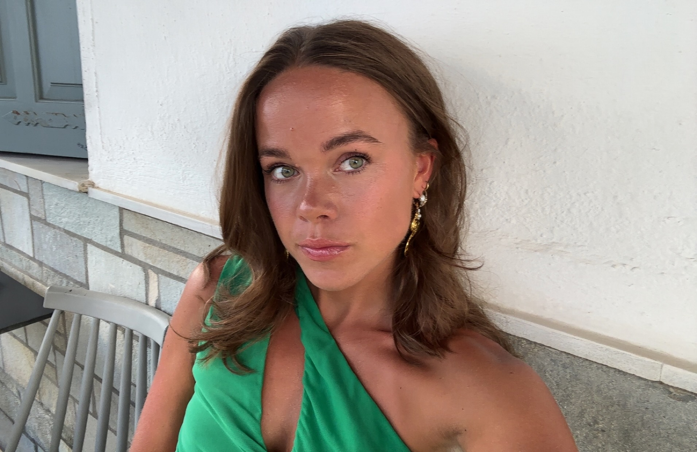
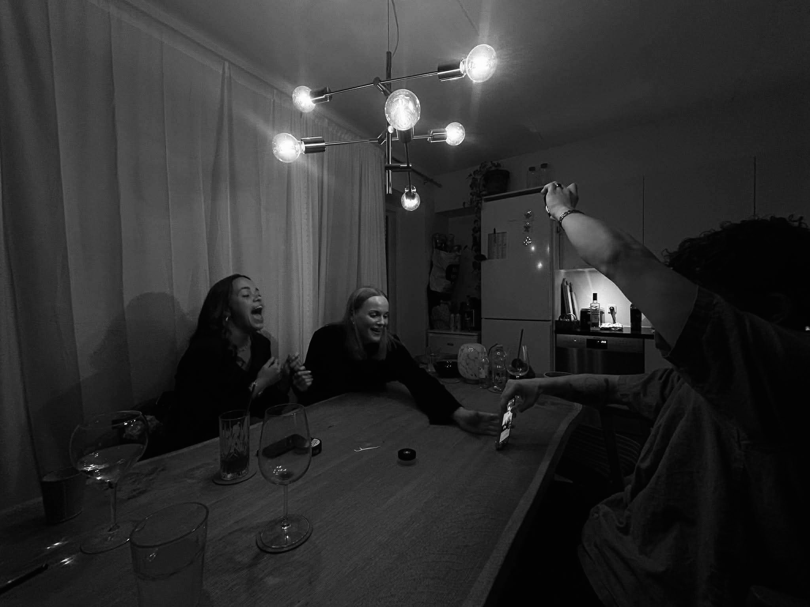

Who am I?
A little about my everyday life, interests and the things that keep me active.
Hi, I'm Emilie, who is living in Aarhus with two roomies. I'm open-minded, positive and always up for meeting new people. In my free time, you'll usually find me running, cycling or at the gym, where I also enjoy strength training and Pilates.
Besides that I'm also helping organize and host the weekly Monday social run at OS Kaffe & Vin, creating a welcoming and social experience for participants.
Otherwise I also do have two jobs, since I also need money for all my activates. I work at, Centralværkstedet, as a waitress and at, Hasle hjemmeplejen, as a social and healthcare worker.

